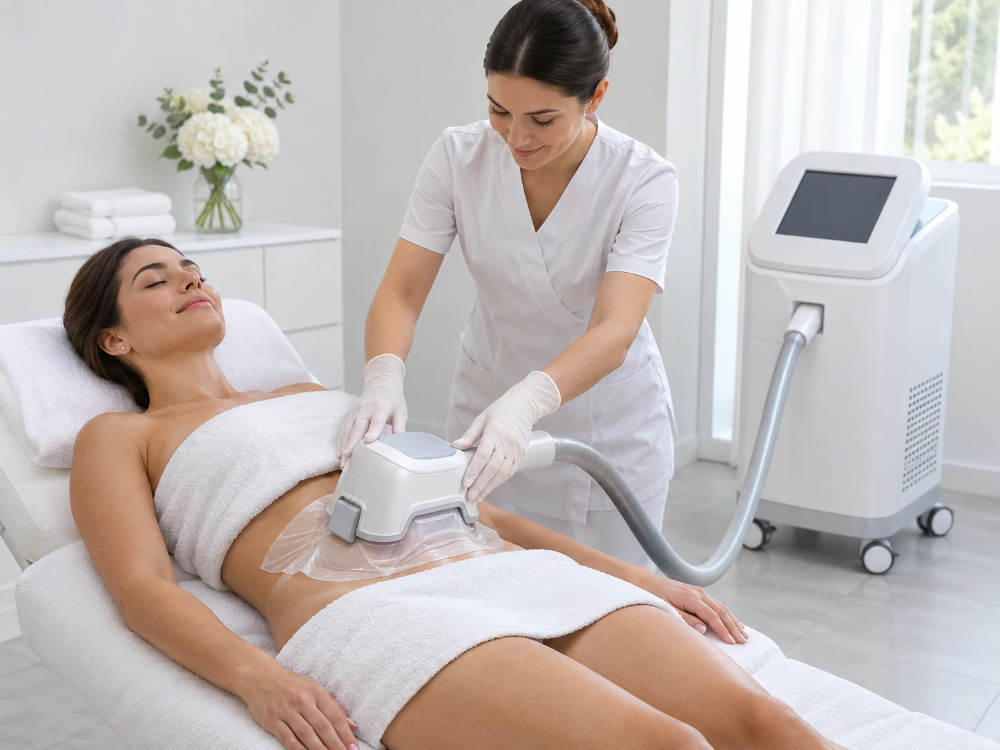

Criolipólisis
¿Qué es la criolipólisis?
Es un procedimiento no quirúrgico que utiliza enfriamiento controlado para actuar sobre depósitos de grasa localizada. En los sistemas con succión, un aplicador toma el pliegue seleccionado y lo enfría mientras se protege la piel. Las células grasas afectadas se procesan gradualmente por el organismo.
¿Qué beneficios puede ofrecer?
Puede reducir el volumen de pequeños depósitos grasos en personas adecuadamente seleccionadas. No es un método para adelgazar ni tratar la obesidad. Los cambios se desarrollan durante las semanas y meses posteriores; la respuesta y el número de sesiones varían.
¿Cómo es una sesión?
Primero se evalúan el pliegue, la zona y los antecedentes. Se coloca la protección indicada y el aplicador. Puede sentirse tracción y frío al principio, seguido de adormecimiento. El tiempo de aplicación depende del sistema y del protocolo; no debe copiarse de otro equipo.
¿Qué seguimiento necesita?
Es importante controlar la evolución y los posibles efectos adversos. Puede haber hematomas, hinchazón, sensibilidad o adormecimiento transitorios. Existe un riesgo poco frecuente de que el tejido graso aumente y se endurezca en vez de reducirse; esa reacción requiere valoración médica y puede necesitar cirugía.

La información es orientativa. Los resultados y la indicación dependen de la evaluación individual.